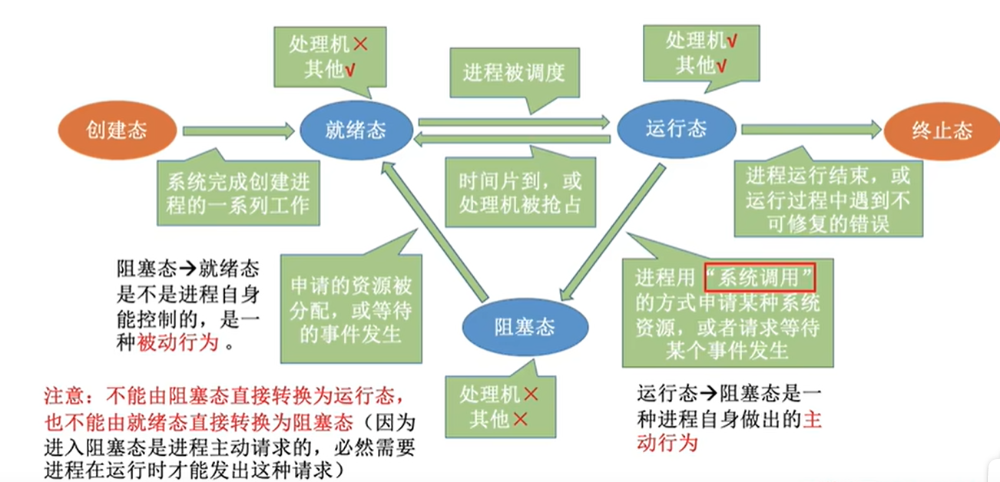

考研之操作系统——进程与线程
进程与线程
进程与线程预备知识
基本概念
程序：静态，存放于磁盘中的可执行文件，是一系列指令的集合。
进程：动态，是程序的一次执行过程。
进程实体：进程某一时刻的状态
进程(进程实体)的组成
$PCB$
进程的描述信息有下面两种：
- 进程标识符$PID(Process{\quad}Identifier)$：在进程被创建时，操作系统为该进程分配唯一的、不重复的标识符。
- 用户标识符$UID$
操作系统不仅要记录上面的信息，还要记录$CPU$、磁盘以及网络流量使用的情况以及资源分配情况等。这些都是操作系统管理进程必需的信息，保存在进程控制块$(PCB)$这一数据结构中。
程序段：程序的指令序列
- 数据段：运行中产生的各类数据
进程的特征
- 动态性：进程是程序的一次执行过程，是动态变化的
- 并发性：内存中有多个进程实体，各进程可以并发运行
- 独立性：进程是独立运行、独立获得资源、独立接受调度的基本单位
- 异步性：各进程各自独立、以不可预知的速度推进，但这样可能会导致执行结果不确定
- 结构性：每个进程都会配置一个$PCB$
进程的状态与切换
进程的状态有如下几种：
- 创建态：进程被创建时的状态，操作系统对该进程初始化并分配$PCB$
- 就绪态：进程创建完成的状态，但是没有空闲$CPU$，因此暂时不能运行
- 运行态：进程被调用，开始运行
- 阻塞态：进程会因为某种原因请求等待，此时操作系统会让这个进程暂停运行，退出$CPU$并进入“阻塞态”
- 终止态：进程执行$exit$系统调用请求终止，此时该进程进入“终止态”并退出$CPU$，操作系统回收资源和$PCB$
进程五种状态的切换如下图所示：

这些状态由$PCB$中的$state$变量来存储，不同的数字代表不同状态。
进程的组织
为了对处于同一状态的进程进行统一管理，操作系统有如下两种方式对各进程进行组织：
- 链接方式：使用链表的方式将这些进程组织起来，通常会将优先级更高的进程放在队列头部
- 索引方式：对各种状态的进程建立索引表，每个索引表的表项会指向一个$PCB$
大多数操作系统使用的都是链接方式
进程控制
操作系统通过原语实现进程状态的切换，这样就不会被中断。
原语通过“关中断指令”让$CPU$不再处理外部中断信号，在执行完毕后又通过“开中断指令”恢复之前的状态，这样就不会被中断。
与进程控制相关的原语有如下几类：
- 创建原语：创建进程时使用，引发该操作的事件有用户登录、作业调度以及提供服务
- 撤销原语：终止进程时使用，引发该操作的事件有正常结束、异常中断以及外界干预
- 阻塞原语：进程阻塞时使用，引发该操作的事件有等待系统分配资源和等待相互合作的其他进程完成工作
- 唤醒原语：进程从阻塞态到就绪态时使用，引发该操作的是等待的事件发生
- 切换原语：切换不同进程时使用，引发该操作的事件有当前进程时间片到、更高优先级的进程到达以及进程阻塞和终止
进程通信
进程之间的通信是指进程之间互相传递数据，为保证进程的安全，防止恶意进程随意修改其他进程的数据，这一过程需要在操作系统的支持下完成。
进程通信主要有以下三类：
共享存储：进程申请一片共享存储区并映射到自己的虚拟地址空间，之后就可以在这片区域内写入数据或读取其他进程的数据。但是不同进程对于共享存储区的访问应当是互斥的，这样可以避免访问出错。
优点：速度快、灵活性高(基于存储区的共享存储)
消息传递：进程之间的数据交换以格式化消息为单位，通过操作系统提供的“发送消息/接收消息”两个原语实现。
- 直接通信：进程$p$格式化消息后使用“发送消息”原语将其放入进程$q$的消息区，进程$q$使用“接收消息”原语指定接收进程$p$的消息，操作系统内核将进程$p$的消息放入进程$q$的地址空间，完成了消息传递。
- 间接通信：这里需要使用中间实体“信箱”。进程$p$格式化消息后使用“发送消息”原语将其放入信箱$A$，进程$q$使用“接收消息”原语指定接收信箱$A$中的消息，操作系统内核将其放入进程$q$的地址空间，完成了消息传递。
- 直接通信需要指定消息的接收方，间接通信不需要指定接收方
管道通信：在内存中开辟一块内存缓冲区，命名为$pipe$共享文件，两个进程通过该文件实现通信。这一管道的通信是单向的，并且满足$FIFO$先进先出的特点，因此和共享存储有所不同。
特点：一个管道只能支持单向传输、管道写满时写进程阻塞/管道读空时读进程阻塞
信号：用于通知进程某个特定时间已经发生，进程收到信号后会进行处理。
在$PCB$中待处理信号$pending$和被阻塞信号$blocked$都是$n$比特的位向量，对应$n$种信号。当进程从内核态转为用户态时会对信号进行检查并处理，处理时计算$pending$ &$ ($~$blocked)$的结果，对于比特位是$1$的信号进行处理即可$($待处理信号为$1$，被阻塞的信号也为$1$，按位取反后再位运算，结果为$1$的信号就是没有被阻塞且需要处理的$)$
注意：处理信号时，如果没有自定义的处理程序，就按照系统默认的来处理；有自定义的处理程序则自定义处理，类似于$C++$中的重写系统函数。但是有些信号既不能自定义函数，也不能被阻塞，例如$SIGSTOP$、$SIGKILL$等
线程基础概念和特点
线程是程序执行流的最小单元，可以理解为轻量级的进程。引入线程后，$CPU$的服务对象不再是进程，而是进程中的线程。进程可以并发，进程中的线程也可以并发，这样进一步提升了系统的并发度，实现一个进程内也可以并发处理各种任务$($例如$QQ$内可以一边聊天一边打视频电话$)$，在这之后，进程只作为资源分配的基本单位，线程成为了调度的基本单位。
线程的特点：
- 线程是$CPU$调度的单位
- 多$CPU$计算机中，各线程可占用不同的$CPU$
- 每个线程都有一个线程$ID$，都有一个线程控制块$(TCB)$
- 线程也有就绪、阻塞、运行三种基本状态
- 线程几乎不拥有系统资源
- 同一进程的多个线程共享进程资源，它们之间的通信无需系统干预
- 同一进程的线程切换不会引起进程切换，不同进程的线程切换会引起进程切换
- 线程切换系统开销小，进程切换系统开销大
线程的实现方式
用户级线程：应用程序通过线程库实现对线程的管理，包括线程的创建、销毁及调度，操作系统不知道线程的存在。
优点：不涉及操作系统，无需切换到内核态，节约系统开销
缺点：当一个用户级线程被阻塞时，整个进程都会被阻塞，并发度不高
内核级线程：操作系统对线程进行管理，线程切换时需要切换$CPU$的状态，操作系统知道线程的存在。
优点：一个线程被阻塞时，不影响其他线程，并发度高
缺点：一个用户进程会占用多个线程，切换时$CPU$需要切换状态，系统开销大
通过将内核级线程和用户级线程相结合，构建了多线程模型：
- 一对一映射：一个用户级线程对应一个内核级线程
- 多对一映射：多个用户级线程对应一个内核级线程
- 多对多映射：$n$个用户级线程对应$m$个内核级线程$(n>=m)$，每个用户进程对应$m$个内核级线程
线程的切换与进程的切换基本一致，组织与控制方式与进程的也很相似，通过$TCB$来实现，此处就不再赘述。
处理机调度
调度的概念及层次
调度：当有一堆任务需要处理，但是无法同时处理时，就确定某种规则来决定处理这些任务的顺序，这就是调度。
调度的三个层次：
- 高级调度：按照一定原则从外存的作业后备队列中挑选一个作业调入内存，并创建对应的进程。每个作业只调入一次，调出一次；调入时创建$PCB$，调出时撤销$PCB$。
- 低级调度：按照一定策略从就绪队列中选取一个进程，将处理机分配给它。这种调度又叫进程调度，是操作系统中最基本的一种调度，频率很高。
- 中级调度：内存不够时将一些进程的数据调入外存，并设为挂起状态，等内存空闲或进程需要运行时再调回内存，这种调度又叫内存调度。
| 调度类型 | 调度发生位置 | 频率 | 对进程状态的影响 |
|---|---|---|---|
| 高级调度 | 外存$→$内存 | 最低 | 无$→$创建态$\to$就绪态 |
| 中级调度 | 外存$→$内存 | 中等 | 挂起态$\to$就绪态 |
| 低级调度 | 内存$→CPU$ | 最高 | 就绪态$\to$运行态 |